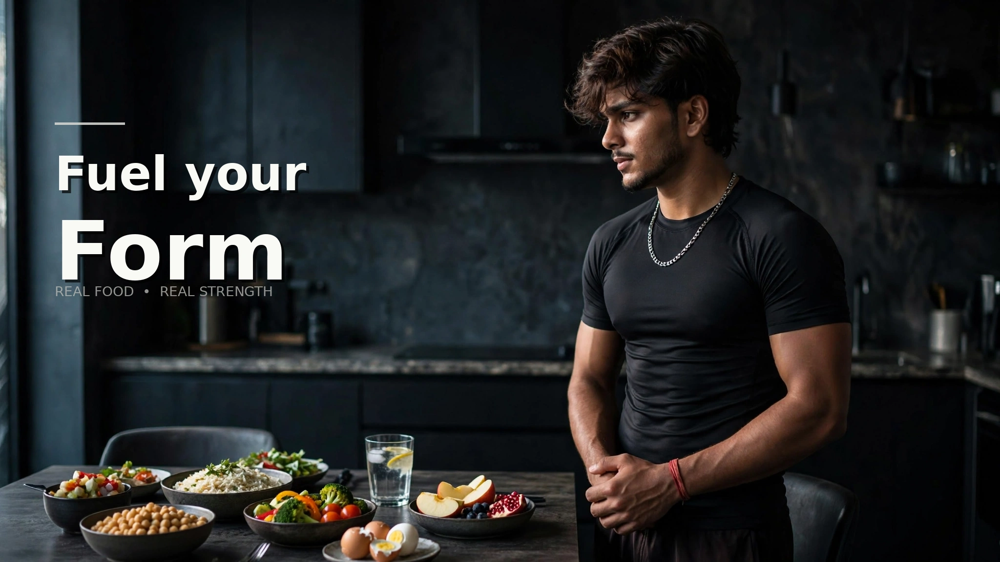
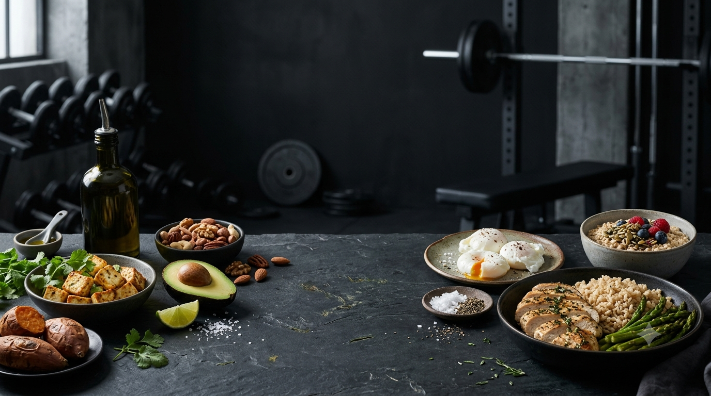
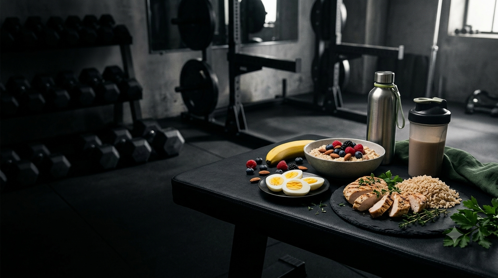
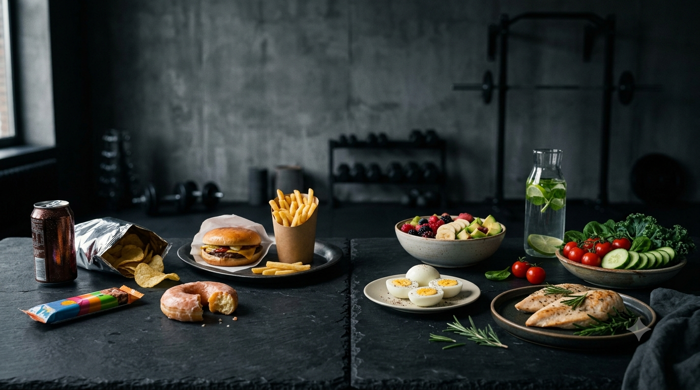

Protein
Protein helps your body build and repair tissues and supports many important body functions.
- Eggs
- Milk and dairy
- Dal and beans
- Chana and peanuts
- Paneer and soy foods

ROSHXLAB · NUTRITION
Learn the fundamentals of nutrition, build balanced meals and understand how food supports training, recovery and everyday health.
THE FOUNDATION
Nutrition is about giving your body the energy and nutrients it needs to learn, move, train, recover and stay healthy. Focus on consistent, balanced habits instead of chasing extreme diets or complicated rules.

THE 3 MACRONUTRIENTS
Protein, carbohydrates and fats each have different roles in a balanced diet.
Protein helps your body build and repair tissues and supports many important body functions.
Carbohydrates are an important source of energy, especially when you're active.
Dietary fats help support normal body functions and help your body absorb certain vitamins.
NUTRITION BASICS
Start with habits you can actually maintain instead of trying to make everything perfect.
Different foods provide different nutrients. Include a mix of grains, fruits, vegetables and protein foods.
Regular balanced meals can help provide steady energy throughout your day.
Water is essential for normal body functions and becomes especially important when you're active.
Learn About Hydration →BUILD YOUR PLATE
A balanced meal can combine a protein source, carbohydrate-rich food, vegetables or fruit and a source of healthy fats. The exact combination can change based on your preferences, culture, appetite and activity.
Build A Balanced Meal →
NUTRITION & TRAINING
Your training and nutrition work together. Focus on enough food, hydration and recovery.
If you're hungry before training, a familiar meal or snack containing carbohydrates and some protein can provide useful energy.
Have a normal balanced meal after training. Include protein, carbohydrates and fluids to support recovery.
Daily nutrition matters more than trying to find one perfect meal before or after a workout.
HYDRATION
Hydration supports normal body functions and is particularly important during physical activity and hot weather.
Read The Hydration Guide →Keep water available and drink regularly throughout the day. Your needs can vary with activity, weather and individual factors.
Drink water before, during and after exercise according to thirst and the conditions you're training in.
For ordinary workouts, plain water is often a practical choice. You don't need fancy drinks for every session.

AVOID THE EXTREMES
Fitness should support your health, not turn food into something to fear.
Extreme restriction can make it harder to get the energy and nutrients your growing body needs.
No single food can replace a varied, balanced eating pattern.
Build your everyday eating habits first. Supplements are not a shortcut to good nutrition.
One meal doesn't define your health. Focus on consistent habits over time.
Nutrition needs can vary with age, activity, health and individual circumstances. If you're unsure about your nutrition, speak with a parent or guardian and a qualified healthcare or nutrition professional.
YOUR NEXT STEP
Learn the fundamentals, build sustainable habits and keep improving one step at a time.